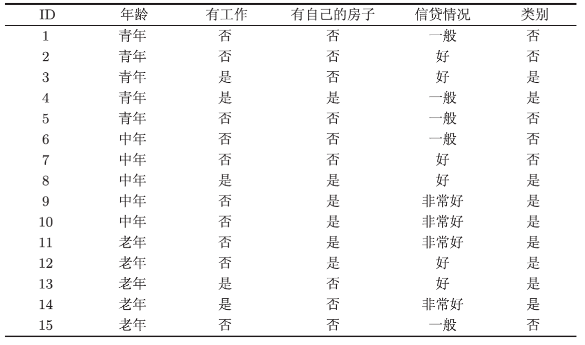
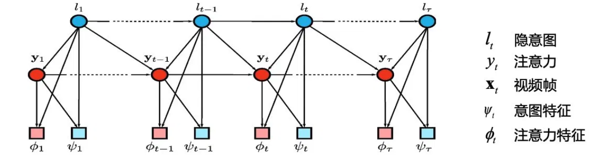
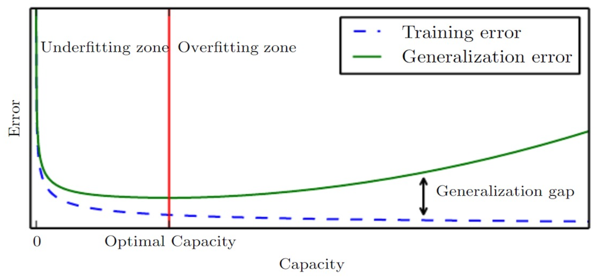
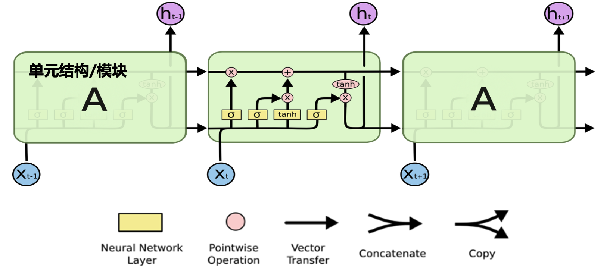
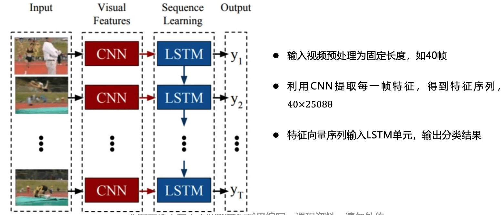
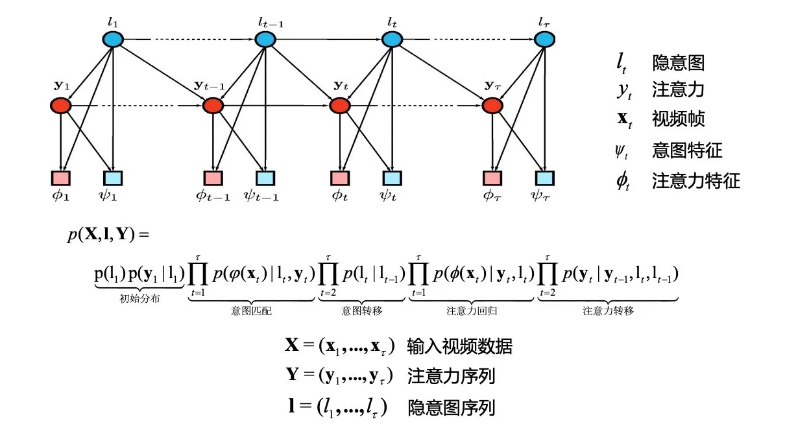
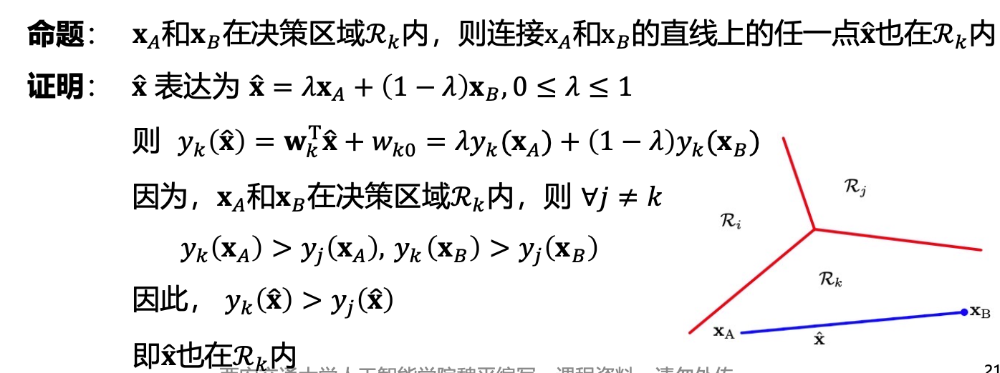
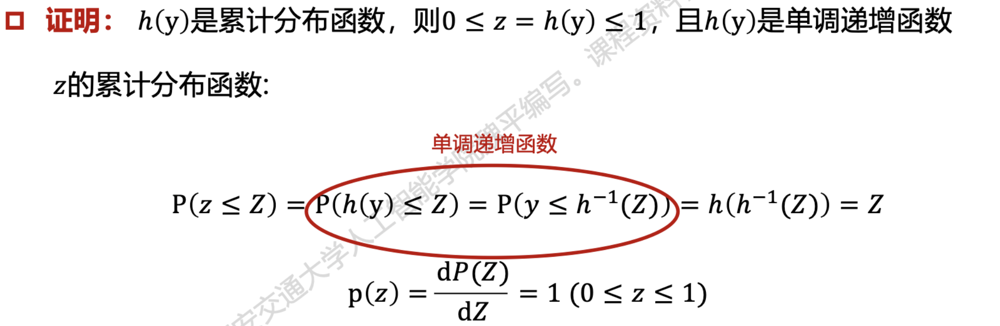

《机器学习》自测参考题
by: 俞逸阳
大部分题目主要依据 2022 年《机器学习》课程期末考试两份回忆版考点与课程 PPT 还原。另外笔者增加了一些并没有出现在回忆版内的题目，目的是尽量覆盖大部分知识点。因此题目数量与正式考试不一致。题目风格也很可能与考试有较大出入。
题目内容用于复习自测，参考答案见卷末附录（部分题目符号习惯可能与PPT中略有不同），选择选项、计算数值、小题考点等为命题人设定，仅供解题思路参考。
一、选择题
1. 关于人工智能与机器学习的发展历史，下列说法错误的是（ ）
- A. 图灵（Alan Turing）提出了"图灵测试"，被誉为"人工智能之父"，并非冯·诺依曼
- B. 1956 年的达特茅斯会议被认为是人工智能学科的诞生标志
- C. 机器学习是人工智能的一个子领域，强调从数据中自动学习规律
- D. "人工智能"这一术语最早由图灵在达特茅斯会议上正式提出
2. 某系统输入一张街景照片中的门牌号图像，输出该门牌对应的阿拉伯数字序列（如 "3 4 7"）。该任务最准确地属于下列哪一类机器学习基本任务？（ ）
- A. 转录
- B. 分类
- C. 回归
- D. 输入缺失分类
3. 设二维连续随机变量 \((X, Y)\) 具有概率密度
记 \(Z = \dfrac{X}{Y}\)。下列关于 \(P(X>Y)\)、\(Z\) 的概率密度 \(f_Z(z)\) 以及 \(\mathrm{Cov}(X,Y)\) 的结论中，全部正确的是（ ）
- A. \(P(X>Y)=\dfrac{2}{3}\)；当 \(z\ge 1\) 时 \(f_Z(z)=\dfrac{2}{3z^2}\)；\(\mathrm{Cov}(X,Y)=0\)
- B. \(P(X>Y)=\dfrac{1}{2}\)；当 \(z\ge 1\) 时 \(f_Z(z)=\dfrac{2}{3}z\)；\(\mathrm{Cov}(X,Y)=0\)
- C. \(P(X>Y)=\dfrac{2}{3}\)；当 \(z\ge 1\) 时 \(f_Z(z)=\dfrac{2}{3z^2}\)；\(\mathrm{Cov}(X,Y)=\dfrac{1}{6}\)
- D. \(P(X>Y)=\dfrac{1}{3}\)；当 \(0<z<1\) 时 \(f_Z(z)=\dfrac{2}{3z^2}\)；\(\mathrm{Cov}(X,Y)=0\)
4. 关于协方差与相关系数，下列说法正确的是（ ）
- A. 若 \(\mathrm{Cov}(X, Y) = 0\)，则 \(X\) 与 \(Y\) 一定相互独立
- B. 协方差 \(\mathrm{Cov}(X, Y) = \mathbb{E}[XY] - \mathbb{E}[X]\mathbb{E}[Y]\)
- C. 相关系数的取值范围是 \([0, 1]\)
- D. 方差 \(\mathrm{Var}(X)\) 可以取负值
5. 已知真实分布 \(P = (0.5, 0.5)\)，预测分布 \(Q = (0.5, 0.5)\)，则底数为 2 的情况下交叉熵 \(H(P, Q)\) 等于（ ）
- A. \(0\)
- B. \(0.5\)
- C. \(1\)
- D. \(2\)
6. 设某离散随机变量有三个取值，其上两个概率分布为 \(P = \left(\tfrac{1}{2}, \tfrac{1}{4}, \tfrac{1}{4}\right)\) 与 \(Q = \left(\tfrac{1}{4}, \tfrac{1}{4}, \tfrac{1}{2}\right)\)。以 \(2\) 为底取对数，则 KL 散度 \(D_{\mathrm{KL}}(P\|Q)\) 等于（ ）（单位：bit）
- A. \(0\)
- B. \(0.25\)
- C. \(0.5\)
- D. \(0.75\)
7. 在软间隔 SVM 中引入松弛变量 \(\xi_i \ge 0\) 后，原始优化问题的约束条件为（ ）
- A. \(y_i(\mathbf{w}^\mathsf{T}\mathbf{x}_i + b) \ge 1+\xi_i\)
- B. \(y_i(\mathbf{w}^\mathsf{T}\mathbf{x}_i + b) \ge 1 - \xi_i\)
- C. \(y_i(\mathbf{w}^\mathsf{T}\mathbf{x}_i + b) \le 1 - \xi_i\)
- D. \(|\mathbf{w}^\mathsf{T}\mathbf{x}_i + b - y_i| \le \xi_i\)
8. 前馈神经网络通过 \(\Phi(\mathbf{x})\) 将原始输入变换到新的特征空间。下列不属于课程中介绍的"构造 \(\Phi\) 的三种方式"的是（ ）
- A. 将\(x\)变换至无限维空间
- B. 手工设计（以人的经验选择特征映射 \(\Phi\)）
- C. 通过学习得到 \(\Phi\)（即深度学习的思想，让网络自动学习 \(\Phi\) 的参数）
- D. 令 \(\Phi(\mathbf{x}) = \mathbf{x}\) 即线性恒等映射
9. 下列函数中，不是合法的核函数的是（ ） （设 \(\mathbf{x}, \mathbf{z}\) 为同维向量）
- A. \(k(\mathbf{x}, \mathbf{z}) = (\mathbf{x}^\mathsf{T}\mathbf{z} + 1)^2\)
- B. \(k(\mathbf{x}, \mathbf{z}) = \exp\left(-\dfrac{\|\mathbf{x} - \mathbf{z}\|^2}{2\sigma^2}\right)\)
- C. \(k(\mathbf{x}, \mathbf{z}) = k_1(\mathbf{x}, \mathbf{z}) + k_2(\mathbf{x}, \mathbf{z})\)，其中 \(k_1\)、\(k_2\) 均为合法核
- D. \(k(\mathbf{x}, \mathbf{z}) = -\exp(\mathbf{x}^\mathsf{T}\mathbf{z})\)
10. 给定如下有向图模型：
graph TD
A --> B
A --> C
B --> D
C --> D下列联合概率分解正确的是（ ）
- A. \(P(A,B,C,D) = P(A)P(B|A)P(C|A)P(D|B,C)\)
- B. \(P(A,B,C,D) = P(A)P(B)P(C)P(D)\)
- C. \(P(A,B,C,D) = P(A)P(B|A)P(C|B)P(D|C)\)
- D. \(P(A,B,C,D) = P(D)P(B|D)P(C|D)P(A|B,C)\)
11. 某二分类器在测试集上：\(\mathrm{TP}=40\)，\(\mathrm{FP}=10\)，\(\mathrm{FN}=40\)，\(\mathrm{TN}=10\)。下列计算正确的是（ ）
- A. 准确率 = 0.5
- B. 精确率 \(P = 0.8\)
- C. 召回率 \(R = 0.5\)
- D. 以上 A、B、C 全部正确
12. 关于生成式模型与判别式模型、集成学习，下列说法错误的是（ ）
- A. 判别式模型直接建模 \(P(y|\mathbf{x})\)；生成式模型建模联合分布 \(P(\mathbf{x}, y)\) 或 \(P(\mathbf{x}|y)P(y)\)
- B. Bagging 中各基学习并行训练；Boosting 中各基学习器存在强依赖关系，须串行生成
- C. Boosting 通过每轮调整样本分布、使被错分样本获得更多关注来提升性能
- D. 马尔科夫随机场（MRF）由五个要素决定：位点空间 \(S=\{s_1,\dots,s_n\}\)（表示变量的取值空间，如类别、几何属性）、相空间 \(\Lambda=\{\lambda_1,\dots,\lambda_m\}\)（表示位点的集合，如时间、空间坐标）、邻域系统 \(N=\{N_i\}\)、局部特性 \(\{p^{(i)}\}_{i\in S}\)、概率表达 \(p(\mathbf{x})\)
13. 在最大间隔分类器中，二分类器为 \(y(\mathbf{x})=\mathbf{w}^\mathsf{T}\boldsymbol{\phi}(\mathbf{x})+b\)，类别标签 \(t_n\in\{+1,-1\}\)。则样本点 \(\mathbf{x}_n\) 到决策平面 \(y(\mathbf{x})=0\) 的间隔表达式为（ ）
- A. \(\dfrac{t_n\big(\mathbf{w}^\mathsf{T}\boldsymbol{\phi}(\mathbf{x}_n)+b\big)}{\|\mathbf{w}\|}\)
- B. \(t_n\big(\mathbf{w}^\mathsf{T}\boldsymbol{\phi}(\mathbf{x}_n)+b\big)\)
- C. \(\dfrac{\mathbf{w}^\mathsf{T}\boldsymbol{\phi}(\mathbf{x}_n)+b}{\|\mathbf{w}\|^2}\)
- D. \(\dfrac{\|\mathbf{w}\|}{t_n\big(\mathbf{w}^\mathsf{T}\boldsymbol{\phi}(\mathbf{x}_n)+b\big)}\)
14. 关于 K 均值聚类、密度聚类（DBSCAN）与层次聚类（AGNES），下列说法错误的是（ ）
- A. K 均值以最小化簇内平方误差 \(E=\sum_{i=1}^{k}\sum_{\mathbf{x}\in C_i}\|\mathbf{x}-\boldsymbol{\mu}_i\|_2^2\) 为目标，需预先指定簇数 \(k\)。
- B. 密度聚类（DBSCAN）基于样本分布的紧密程度、扩展聚类簇，能发现任意形状的簇、可在聚类的同时识别异常点，且无需预先指定簇数
- C. 层次聚类是采用"自底向上"聚合策略的层次聚类算法：初始时每个样本各成一簇，每步合并距离最近的两个簇，直至达到预设簇数
- D. K 均值能直接发现"同心圆""双月牙"等非凸形状的簇，而密度聚类只适用于凸形数据集
15. 某二分类器：\(\mathrm{TP}=30\)，\(\mathrm{FP}=30\)，\(\mathrm{FN}=0\)，\(\mathrm{TN}=40\)。则该分类器的 \(F_2\) 度量为（ ）
- A. \(\dfrac{5}{6}\)
- B. \(\dfrac{2}{3}\)
- C. \(0.5\)
- D. \(0.75\)
16. 现有如下贷款申请训练集 \(D\)：

则信息熵 \(\mathrm{Ent}(D)\) 以及按信息增益选出的最优划分属性 \(a^*=\arg\max_a \mathrm{Gain}(D,a)\) 分别为（ ）
- A. \(\mathrm{Ent}(D)\approx 0.971\) bit，最优属性为"有自己的房子"
- B. \(\mathrm{Ent}(D)\approx 0.971\) bit，最优属性为"有工作"
- C. \(\mathrm{Ent}(D)=1\) bit，最优属性为"有自己的房子"
- D. \(\mathrm{Ent}(D)\approx 0.971\) bit，最优属性为"信贷情况"
17. 关于自编码器（Auto Encoder）、生成对抗网络（GAN）与扩散模型（Diffusion），下列说法错误的是（ ） - A. 自编码器由编码器与解码器两部分组成，编码器将高维输入压缩为低维隐变量 \(h\)、解码器据此重建输入 \(\hat{x}\)，训练目标是最小化重构误差 \(\mathrm{dist}(x,\hat{x})\) - B. GAN 中生成器 \(G\) 与判别器 \(D\) 进行对抗，目标函数为 \(\min_G\max_D\,\{\mathbb{E}_{x\sim p_{\text{data}}}\log D(x)+\mathbb{E}_{z\sim p_z}\log[1-D(G(z))]\}\)，\(D(x)\) 表示判别器输出样本为真的概率 - C. 扩散模型的正向过程逐步向数据添加高斯噪声，使其分布趋于近似标准高斯 \(\mathcal{N}(0,I)\)；逆向过程则学习逐步去噪以从噪声重建样本 - D. 在对生成模型的分类中，GAN 属于"显式法"，即通过显式建模并直接最大化数据似然 \(p_\theta(x)\) 来训练
二、问答题
1. 模型评估与泛化
- 简述 K 折交叉验证的基本流程，并各列举其一条优点和一条缺点。
- 给出过拟合与欠拟合的定义；画出训练误差、泛化误差随模型容量变化的曲线，并指出欠拟合区、过拟合区与最优容量位置。
- 什么是正则化？请说明正则化的用途，并写出 L2 正则化的目标函数一般形式。
2. 集成学习
- 什么是集成学习？它主要解决什么问题？简要介绍它的两种主要方法。
- 给定二分类问题 \(y \in \{-1, +1\}\)，写出 AdaBoost 算法流程。
3. 线性模型
- 对二分类问题，设判别函数 \(y = \mathbf{w}^\mathsf{T}\mathbf{x} + w_0\)。写出 Fisher 线性判别准则和其中\(S_B\)、\(S_W\) 的定义，并写出优化目标函数 \(J(\mathbf{w})\)以及最优解 \(\mathbf{w}\) 的方向。
- 写出逻辑回归模型 \(P(y=1|\mathbf{x})\)的表达式，并基于最大似然估计写出其似然函数和优化目标函数。
4. 卷积神经网络与循环神经网络
- 画出 LSTM 单元的结构图，标出遗忘门、输入门、输出门、单元状态 \(C_t\) 与隐状态 \(h_t\)，并写出各门控与状态更新的计算公式。
- 给定 \(4\times 4\) 单通道输入特征图 \(X\) 与 \(3\times 3\) 卷积核 \(K\)（步长 \(\text{stride}=1\)，填充 \(\text{padding}=1\)，零填充）：
- 求卷积输出特征图的尺寸，及该卷积层的参数量；（注：实际考参数量更可能是给出一个完整的模型网络计算总参数，这时候只要把各层参数相加，要注意不同类型的层中参数计算方法）
- 计算卷积输出特征图；
- 对卷积输出应用 Leaky ReLU（负斜率 $\alpha=0.1$），写出表达式，并计算激活后的特征图；
- 再对激活后的特征图做 $2\times 2$、步长 $2$ 的平均池化，计算输出图。
- 现要对一段视频的连续帧进行动作识别。请画出一个结合 CNN + LSTM 的处理流程图，并辅以简要说明。
5. 采样方法
- 简述逆变换采样的方法。
- 设目标分布 \(p(z)=\dfrac{1}{Z_p}\tilde{p}(z)\)，其中\(\tilde{p}(z)\) 为已知分布，\(Z_p\) 为归一化因子。简述拒绝采样的步骤。其中 \(k\) 的选取应该符合什么标准？
- （其他也可能考）
6. 概率和概率图模型
- 已知随机变量 \(A\)、\(B\) 的联合分布 \(P(A,B)\) 如下表，求边缘概率 \(P(B{=}1)\)。
| \(P(A,B)\) | \(A=0\) | \(A=1\) |
|---|---|---|
| \(B=0\) | \(0.32\) | \(0.18\) |
| \(B=1\) | \(0.08\) | \(0.42\) |
-
已知五个随机变量的联合分布可分解为 $\(P(a,b,c,e,f)=P(a)\,P(f)\,P(e\mid a,f)\,P(b\mid f)\,P(c\mid e),\)$ 请画出与之对应的有向图（贝叶斯网络）。
-
下图是一个用于视频动作识别的注意力图模型

请写出该模型的联合概率分布 \(p(\mathbf{X}, \mathbf{l}, \mathbf{Y})\) 的分解表达式。
7. 考虑一个简单的前馈神经网络：\(2\) 个输入节点 \(x_1,x_2\)，\(1\) 个隐藏层节点 \(h\)，\(1\) 个输出节点 \(y\)。输入层到隐藏层的权重为 \(w_{1h}=0.5,\ w_{2h}=0.3\)；隐藏层到输出层的权重为 \(w_{h1}=0.4\)。激活函数采用 sigmoid 函数 \(\sigma(z)=\dfrac{1}{1+e^{-z}}\)。已知输入样本 \(x_1=0.6,\ x_2=0.8\)，期望输出 \(t=0.7\)，损失函数取均方误差 \(E=\dfrac{1}{2}(t-y)^2\)。
- 前向传播：计算隐藏层节点的输入 \(z_h\) 与输出 \(h\)、输出层节点的输入 \(z_y\) 与输出 \(y\)，以及损失 \(E\)。
- 反向传播：使用反向传播算法计算损失 \(E\) 对隐藏层到输出层权重 \(w_{h1}\) 的偏导数 \(\dfrac{\partial E}{\partial w_{h1}}\)。
8. Transformer 与自注意力机制
- Transformer 编码器的输入编码由哪两部分相加得到？简述为什么需要位置编码。
- Transformer 编码器中为什么引入 \(Q,K,V\) 三个线性变换，而不直接用 \(X\) 计算注意力。
9. 朴素贝叶斯分类器
试由表中的训练数据学习一个朴素贝叶斯分类器并确定 \(x=(2,S)^\mathsf{T}\) 的类标记 \(y\)。表中 \(X^{(1)}\)，\(X^{(2)}\) 为特征，取值的集合分别为 \(A_1=\{1,2,3\}\)，\(A_2=\{S,M,L\}\)，\(Y\) 为类标记，\(Y\in C=\{1,-1\}\)。
| 1 | 2 | 3 | 4 | 5 | 6 | 7 | 8 | 9 | 10 | 11 | 12 | 13 | 14 | 15 | |
|---|---|---|---|---|---|---|---|---|---|---|---|---|---|---|---|
| \(X^{(1)}\) | 1 | 1 | 1 | 1 | 1 | 2 | 2 | 2 | 2 | 2 | 3 | 3 | 3 | 3 | 3 |
| \(X^{(2)}\) | \(S\) | \(M\) | \(M\) | \(S\) | \(S\) | \(S\) | \(M\) | \(M\) | \(L\) | \(L\) | \(L\) | \(M\) | \(M\) | \(L\) | \(L\) |
| \(Y\) | \(-1\) | \(-1\) | \(1\) | \(1\) | \(-1\) | \(-1\) | \(-1\) | \(1\) | \(1\) | \(1\) | \(1\) | \(1\) | \(1\) | \(1\) | \(-1\) |
10. 前向算法
考虑盒子和球模型 \(\lambda=(P,Q,\pi)\)，状态集合 \(S=\{1,2,3\}\)，观测集合 \(V=\{\text{红},\text{白}\}\)，
其中 \(P=[p_{ij}]\) 为状态转移矩阵，\(Q=[q_i(\cdot)]\) 为观测（发射）概率矩阵，\(\pi=[\pi_i]\) 为初始状态分布。设 \(n=3\)，观测序列 \(\mathbf{y}=(\text{红},\text{白},\text{红})\)，试用前向算法计算 \(p(\mathbf{y}\mid\lambda)\)。
三、证明题
1. KL 散度的性质
设 \(P\)、\(Q\) 为定义在同一离散样本空间上的两个概率分布。证明：
- 非负性：\(D_{\mathrm{KL}}(P\|Q) = \sum_x p(x) \log\dfrac{p(x)}{q(x)} \ge 0\)。
- 不对称性：一般情况下 \(D_{\mathrm{KL}}(P\|Q) \ne D_{\mathrm{KL}}(Q\|P)\)。
2. 已知在 ROC 曲线中曲线 I 完全优于曲线 II。证明：在 PR曲线中，曲线 I 同样优于曲线 II。
3. 设 \(\mathbf{x}\)、\(\mathbf{y}\) 为 \(n\) 维变量，\(p(\mathbf{x})\) 为概率密度，\(l\) 为离散型随机变量。证明下列函数是合法核函数：
4. 在隐马尔可夫模型中，观测序列为 \(y_1,y_2,\dots,y_n\)，隐状态 \(s_t\in S\)。定义前向变量
即部分观测序列 \(y_1,\dots,y_t\) 与 \(t\) 时刻状态为 \(i\) 的联合概率。假设观测 \(y_t\) 仅依赖当前状态 \(s_t\)；状态序列满足一阶马尔可夫性，证明前向变量满足递推关系
并写出 \(p(y_1,y_2,\dots,y_n)\) 的计算式。
5. 证明 K 类判别式方法的决策区域是单连通和凸的。
6. 考虑线性回归模型，假设目标值与输入满足
其中噪声 \(\epsilon^{(i)}\sim\mathcal{N}(0,\sigma^2)\) 独立同分布， 给定 \(m\) 个独立样本，似然函数 \(L(\boldsymbol{\theta})=p(\vec{y}\mid X;\boldsymbol{\theta})\)。证明：在最大似然估计下，最大化 \(L(\boldsymbol{\theta})\) 等价于最小化最小二乘代价函数
7. 设 \(y\) 是一个连续随机变量，其概率密度函数为 \(p(y)\)，累计分布函数为 \(h(y)=P(Y\le y)\)，且 \(h\) 是单调递增函数。令 \(z=h(y)\)。证明：\(z\) 服从区间 \([0,1]\) 上的均匀分布。
8. 设扩散模型的正向过程为一阶马尔可夫链，每一步加噪定义为
各步注入的噪声 \(\epsilon_t\sim\mathcal{N}(0,I)\) 相互独立，且与 \(x_0\) 独立。
证明：在给定 \(x_0\) 与 \(0<\beta_s<1\)（\(s\)为任意正整数），且步数足够大时，\(x_t\) 的分布近似为标准高斯分布 \(\mathcal{N}(0,I)\)。
附录：参考答案
一、选择题答案
| 题号 | 1 | 2 | 3 | 4 | 5 | 6 | 7 | 8 | 9 | 10 | 11 | 12 | 13 | 14 | 15 | 16 | 17 |
|---|---|---|---|---|---|---|---|---|---|---|---|---|---|---|---|---|---|
| 答案 | D | A | A | B | C | B | B | D | D | A | D | D | A | D | A | A | D |
逐题解析：
- D。"人工智能"术语由 John McCarthy 等在 1956 年达特茅斯会议提出，并非图灵；图灵提出图灵测试且被称为"人工智能之父"，A、B、C 正确，错误项为 D。
- A。
- A（提示：概率论并不是这门课的绝对重点，实际应该不会出那么难，但最好还是复习一下概率论相关知识）。
- \(P(X>Y)\)：在区域 \(x>y\) 上积分，\(P(X>Y)=\displaystyle\int_0^1 \mathrm{d}x\int_0^x 2x\,\mathrm{d}y=\int_0^1 2x^2\,\mathrm{d}x=\dfrac{2}{3}\)。
- \(Z=X/Y\) 的密度：由商分布公式 \(f_Z(z)=\displaystyle\int_{-\infty}^{+\infty}|y|\,f(yz,\,y)\,\mathrm{d}y=\int_0^1 y\cdot 2(yz)\,\mathrm{d}y\)。当 \(0<z<1\) 时积分上限为 \(1\)，\(f_Z(z)=\displaystyle\int_0^1 2y^2z\,\mathrm{d}y=\dfrac{2}{3}z\)；当 \(z\ge 1\) 时上限为 \(1/z\)，\(f_Z(z)=\displaystyle\int_0^{1/z} 2y^2z\,\mathrm{d}y=\dfrac{2}{3z^2}\)；\(z\le 0\) 时为 \(0\)。
- \(\mathrm{Cov}(X,Y)\)：边缘密度 \(f_X(x)=\displaystyle\int_0^1 2x\,\mathrm{d}y=2x\)，\(f_Y(y)=\displaystyle\int_0^1 2x\,\mathrm{d}x=1\)。因 \(f(x,y)=2x=f_X(x)f_Y(y)\)，故 \(X\) 与 \(Y\) 独立，从而 \(\mathrm{Cov}(X,Y)=0\)。
- 三项与选项 A 完全一致，故选 A。
- B。协方差定义即 \(\mathbb{E}[XY]-\mathbb{E}[X]\mathbb{E}[Y]\)。A 错（不相关 \(\ne\) 独立），C 错（相关系数 \(\in [-1,1]\)），D 错（方差非负）。
- C。\(H(P,Q) = -(0.5\cdot\log_2 0.5 + 0.5\cdot\log_2 0.5) = -(0.5\cdot(-1)+0.5\cdot(-1)) = \mathbf{1}\) bit。
- B。\(D_{\mathrm{KL}}(P\|Q)=\sum_x p(x)\log_2\dfrac{p(x)}{q(x)}\)，逐项代入： $$ D_{\mathrm{KL}}(P|Q)=\tfrac{1}{2}\log_2\tfrac{1/2}{1/4}+\tfrac{1}{4}\log_2\tfrac{1/4}{1/4}+\tfrac{1}{4}\log_2\tfrac{1/4}{1/2}=\tfrac{1}{2}(1)+\tfrac{1}{4}(0)+\tfrac{1}{4}(-1)=\tfrac{1}{2}-\tfrac{1}{4}=\mathbf{0.25} \text{bit}. $$ 注意 KL 散度不对称，本题若反过来算 \(D_{\mathrm{KL}}(Q\|P)=\tfrac{1}{4}(-1)+0+\tfrac{1}{2}(1)=0.25\) 恰好也为 \(0.25\)（仅因该例数值对称所致，一般情况二者不相等）。
- B。软间隔约束为 \(y_i(\mathbf{w}^\mathsf{T}\mathbf{x}_i+b) \ge 1 - \xi_i\)，\(\xi_i \ge 0\)。
- D。构建 \(\phi\) 的三种方式：
- 通用映射 \(\phi\)，将 \(x\) 变换至无限维空间 \(\phi(x)\)
- 人工设计 \(\phi\)，以人的经验选择特征，如边缘、HOG、SIFT
- 自主学习 \(\phi\)，从数据中挖掘和学习实现某一任务目标的最佳 \(\phi(x)\)。深度学习和神经网络即属于此类
- D。核函数要求可以表示为一个内积，\(k(x,y) = \langle \phi(x), \phi(y) \rangle\)。A、B、C 都是合法核函数（多项式核、高斯核、核函数的线性组合仍是核函数），但 D 中如果 \(k\) 是核函数，那么令 \(y = x\) 时必然有 \(k(x,x) = \|\phi(x)\|^2 \ge 0\)，但带入 D 中的函数会得到负值，因此不是合法核函数。
- A。按图结构：\(A\) 无父；\(B\) 父为 \(A\)；\(C\) 父为 \(A\)；\(D\) 父为 \(B\)、\(C\)。故 \(P(A)P(B|A)P(C|A)P(D|B,C)\)。
- D。总样本 \(=40+10+40+10=100\)。\(\mathrm{Accuracy}=\dfrac{\mathrm{TP}+\mathrm{TN}}{\text{总数}}=\dfrac{40+10}{100}=\mathbf{0.5}\)；\(P=\dfrac{\mathrm{TP}}{\mathrm{TP}+\mathrm{FP}}=\dfrac{40}{40+10}=\mathbf{0.8}\)；\(R=\dfrac{\mathrm{TP}}{\mathrm{TP}+\mathrm{FN}}=\dfrac{40}{40+40}=\mathbf{0.5}\)。三项均正确，故选 D。
- D。马尔可夫随机场确由五个要素决定（位点空间 \(S\)、相空间 \(\Lambda\)、邻域系统 \(N\)、局部特性 \(\{p^{(i)}\}_{i\in S}\)、概率表达 \(p(\mathbf{x})\)），但 D 把位点空间与相空间的定义对调了：正确表述应为——位点空间 \(S\) 是位点的集合（如时间、空间坐标），相空间 \(\Lambda\) 是变量的取值空间（如类别、几何属性）。故 D 错误，应选 D。
- A。点到超平面 \(y(\mathbf{x})=\mathbf{w}^\mathsf{T}\boldsymbol{\phi}(\mathbf{x})+b=0\) 的距离为 \(\dfrac{|y(\mathbf{x}_n)|}{\|\mathbf{w}\|}\)；对所有样本有 \(t_n y(\mathbf{x}_n)>0\)，所以间隔 \(=\dfrac{t_n(\mathbf{w}^\mathsf{T}\boldsymbol{\phi}(\mathbf{x}_n)+b)}{\|\mathbf{w}\|}\)，选 A。
- D。D 密度聚类能处理"同心圆""双月牙"等非凸形状，而 K 均值在这类数据上失效（只适合凸/球形簇），故 D 错误，应选 D。
- A。先算查准率与查全率：\(P=\dfrac{\mathrm{TP}}{\mathrm{TP}+\mathrm{FP}}=\dfrac{30}{60}=0.5\)，\(R=\dfrac{\mathrm{TP}}{\mathrm{TP}+\mathrm{FN}}=\dfrac{30}{30}=1\)。代入 \(\beta=2\)：\(F_2=(1+4)\cdot\dfrac{P\cdot R}{4P+R}=5\cdot\dfrac{0.5\times 1}{4\times 0.5+1}=\dfrac{5}{6}\)，选 A。
- A。
- 信息熵：\(D\) 中"是" \(9\) 个、"否" \(6\) 个，故 $$ \mathrm{Ent}(D)=-\left(\tfrac{9}{15}\log_2\tfrac{9}{15}+\tfrac{6}{15}\log_2\tfrac{6}{15}\right)\approx 0.971 \text{bit}. $$
- 有自己的房子（记 \(A_3\)）：有房 \(\{4,8,9,10,11,12\}\) 共 \(6\) 个全为"是"（\(\mathrm{Ent}=0\)）；无房 \(9\) 个为 \(3\) 是 \(6\) 否（\(\mathrm{Ent}=-\tfrac{1}{3}\log_2\tfrac{1}{3}-\tfrac{2}{3}\log_2\tfrac{2}{3}\approx 0.918\)）。 $$ \mathrm{Gain}(D,A_3)=0.971-\left(\tfrac{6}{15}\times 0+\tfrac{9}{15}\times 0.918\right)\approx 0.420. $$
- 有工作（\(A_2\)）：\(\mathrm{Gain}(D,A_2)=0.971-\left(\tfrac{5}{15}\times 0+\tfrac{10}{15}\times 0.971\right)\approx 0.324\)。
- 信贷情况（\(A_4\)）：\(\mathrm{Gain}(D,A_4)\approx 0.363\)。
- 年龄（\(A_1\)）：青年 \(\{1\text{–}5\}\) 为 \(2\) 是 \(3\) 否、中年 \(\{6\text{–}10\}\) 为 \(3\) 是 \(2\) 否，二者熵均为 \(-\tfrac{2}{5}\log_2\tfrac{2}{5}-\tfrac{3}{5}\log_2\tfrac{3}{5}\approx 0.971\)；老年 \(\{11\text{–}15\}\) 为 \(4\) 是 \(1\) 否，熵为 \(-\tfrac{4}{5}\log_2\tfrac{4}{5}-\tfrac{1}{5}\log_2\tfrac{1}{5}\approx 0.722\)。 $$ \mathrm{Gain}(D,A_1)=0.971-\left(\tfrac{5}{15}\times 0.971+\tfrac{5}{15}\times 0.971+\tfrac{5}{15}\times 0.722\right)\approx 0.971-0.888\approx 0.083. $$
- 四者中 \(\mathrm{Gain}(D,A_3)\approx 0.420\) 最大，故最优划分属性为"有自己的房子"，选 A。
- D。按课程对生成模型的分类：显式法（近似法→变分自编码器、扩散模型；变形法→流模型）与隐式法（→生成对抗网络）。GAN 不显式建模似然 \(p_\theta(x)\)，而是通过生成器/判别器对抗博弈隐式地拟合数据分布，属于隐式法，故 D 错误。
二、问答题参考答案
1. 模型评估与泛化
- K 折交叉验证：将数据集均分为 \(k\) 份，每次取 1 份作验证集、其余 \(k-1\) 份作训练集，重复 \(k\) 次，取 \(k\) 次验证指标的平均作为模型评估结果。
- 优点：充分利用数据、评估结果更稳定（方差小），适合数据量有限场景。
- 缺点：需训练 \(k\) 次，计算开销大；\(k\) 选取不当会影响偏差/方差权衡。
- 过拟合：过拟合指模型过于复杂，不仅学习了数据的真实规律，还“记住”了训练数据中的噪声和异常值，导致在训练集上表现极佳，但在测试集或新数据上性能下降，训练误差低但泛化误差高。 欠拟合：模型过于简单，无法捕捉数据中的基本规律，导致在训练集和测试集上表现都不佳，训练误差和泛化误差都较高。
图：

- 正则化：为了防止过拟合，可以为损失函数加上一个惩罚项，对复杂的模型进行惩罚，强制让模型的参数值尽可能小以使得模型更简单，以提高泛化性能，这种方法称为正则化技术。
L2 正则化目标：\(J(\mathbf{w}) = L(\mathbf{w}) + \dfrac{\lambda}{2}\|\mathbf{w}\|_2^2\)（\(\lambda\) 为正则化系数，控制惩罚强度）。L1 正则化（\(\lambda\|\mathbf{w}\|_1\)）则产生稀疏解。（各种符号习惯只要正确均可）
2. 集成学习
-
集成学习：训练多个学习器并按某种策略组合，以获得比单个学习器更好、更稳健的性能；主要解决单模型偏差/方差大、易过拟合或欠拟合的问题。 Bagging通过自助采样得到不同子集，并行训练相互独立的基学习器并结合，主要降低方差；Boosting串行训练，每轮根据上一轮结果调整样本权重，使错分样本被更关注，主要降低偏差。
-
AdaBoost 算法（二分类 \(y \in \{-1,+1\}\)，共 \(T\) 轮）：
- 初始化样本权值分布：\(D_1(i) = \dfrac{1}{m},\ i = 1,\dots,m\)。
- 对 \(t = 1,\dots,T\)：
- 基于分布 \(D_t\) 训练基分类器 \(h_t(\mathbf{x})\)。
- 计算误差率：\(e_t = \sum_{i} D_t(i)\cdot \mathbb{1}[h_t(\mathbf{x}_i) \ne y_i]\)；若 \(e_t > 0.5\) 则停止。
- 计算系数：\(\alpha_t = \dfrac{1}{2}\ln\dfrac{1 - e_t}{e_t}\)。
- 更新权值： $\(D_{t+1}(i) = \frac{D_t(i)}{Z_t}\exp\!\big(-\alpha_t\, y_i\, h_t(\mathbf{x}_i)\big),\)$ 其中规范化因子 \(Z_t = \sum_{i} D_t(i)\exp\!\big(-\alpha_t\, y_i\, h_t(\mathbf{x}_i)\big)\)，保证 \(D_{t+1}\) 为分布。 （错分样本权值放大、正确分类样本权值缩小。）
- 输出强分类器：\(H(\mathbf{x}) = \mathrm{sign}\!\left(\sum_{t} \alpha_t\, h_t(\mathbf{x})\right)\)。
3. 线性模型
-
Fisher 线性判别：
-
Fisher准则：
\[ \begin{aligned} J(\mathbf{w}) &= \frac{(m_2 - m_1)^2}{s_1^2 + s_2^2} = \frac{\mathbf{w}^T S_B \mathbf{w}}{\mathbf{w}^T S_W \mathbf{w}} \\ S_B &= (\mathbf{m}_2 - \mathbf{m}_1)(\mathbf{m}_2 - \mathbf{m}_1)^T \\ S_W &= \sum_{n \in C_1} (\mathbf{x}_n - \mathbf{m}_1)(\mathbf{x}_n - \mathbf{m}_1)^T + \sum_{n \in C_2} (\mathbf{x}_n - \mathbf{m}_2)(\mathbf{x}_n - \mathbf{m}_2)^T \end{aligned} \] -
优化目标：\(w^* = \arg\max J(\mathbf{w})\)。
- 最优解方向：\(\mathbf{w} \propto S_W^{-1}(\boldsymbol{\mu}_1 - \boldsymbol{\mu}_2)\)。
-
-
逻辑回归：\(P(y=1|\mathbf{x}) = \sigma(\mathbf{w}^\mathsf{T}\mathbf{x} + w_0) = \dfrac{1}{1 + \exp\!\big(-(\mathbf{w}^\mathsf{T}\mathbf{x} + w_0)\big)}\)。 似然 \(L(\mathbf{w}) = \prod_{i} \sigma(z_i)^{y_i}\,\big(1-\sigma(z_i)\big)^{1-y_i}\)，其中 \(z_i = \mathbf{w}^\mathsf{T}\mathbf{x}_i + w_0\)。
取负对数似然得目标，最小化交叉熵损失：
$$ J(\mathbf{w}) = -\sum_{i} \big[\, y_i \log \sigma(z_i) + (1 - y_i)\log\big(1 - \sigma(z_i)\big) \big]. $$
用梯度下降/牛顿法求解，梯度为 \(\nabla J(\mathbf{w}) = \sum_{i} \big(\sigma(z_i) - y_i\big)\mathbf{x}_i\)。
4. 卷积神经网络与循环神经网络
-
LSTM 单元结构图：

计算公式：
\[ \begin{aligned} f_t &= \sigma\big(W_f[h_{t-1}, x_t] + b_f\big),\quad i_t = \sigma\big(W_i[h_{t-1}, x_t] + b_i\big),\quad o_t = \sigma\big(W_o[h_{t-1}, x_t] + b_o\big), \\ \tilde{C}_t &= \tanh\big(W_C[h_{t-1}, x_t] + b_C\big),\quad C_t = f_t \odot C_{t-1} + i_t \odot \tilde{C}_t,\quad h_t = o_t \odot \tanh(C_t). \end{aligned} \] -
卷积计算：
- 输出尺寸 \(= \dfrac{4 - 3 + 2\times 1}{1} + 1 = \mathbf{4}\)，即 \(4\times 4\)；参数量（无偏置） \(= 3\times 3 = \mathbf{9}\)。
- 卷积输出：逐格计算得： \(\begin{bmatrix} 20 & 0 & 40 & 60 \\ 0 & -40 & 20 & 60 \\ 40 & 20 & 60 & 80 \\ 60 & 60 & 80 & 60 \end{bmatrix}\)
- Leaky ReLU：\(f(z) = \begin{cases} z, & z \ge 0 \\ 0.1\,z, & z < 0 \end{cases}\)，即 \(f(z) = \max(0.1z,\, z)\)。仅 \(-40\times 0.1=-4\)，激活后： \(\begin{bmatrix} 20 & 0 & 40 & 60 \\ 0 & -4 & 20 & 60 \\ 40 & 20 & 60 & 80 \\ 60 & 60 & 80 & 60 \end{bmatrix}\)
- 平均池化（\(2\times 2\)、\(\text{stride}=2\)）：输出尺寸 \(=\left\lfloor\dfrac{4-2}{2}\right\rfloor+1=\mathbf{2}\)，即 \(2\times 2\)。逐窗取平均：
- 左上：\(\dfrac{20+0+0+(-4)}{4}=\dfrac{16}{4}=4\)；
- 右上：\(\dfrac{40+60+20+60}{4}=\dfrac{180}{4}=45\)；
- 左下：\(\dfrac{40+20+60+60}{4}=\dfrac{180}{4}=45\)；
- 右下：\(\dfrac{60+80+80+60}{4}=\dfrac{280}{4}=70\)。 故池化输出为 \(\begin{bmatrix} 4 & 45 \\ 45 & 70 \end{bmatrix}\)，尺寸 \(2\times 2\)。
-
CNN + LSTM 动作识别流程：

5. 采样方法
- 逆变换采样：采均匀分布中的随机数 \(u \sim U(0,1)\) \(\to\) 输出 \(x = F^{-1}(u)\)。
-
拒绝采样：用一个更简单、易采样的提议分布 \(q(z)\)覆盖目标分布。引入常数 \(k\)，使 \(kq(z)\) 对任意 \(z\) 满足 \(kq(z)\ge \tilde{p}(z)\)。步骤：
- ① 从 \(q(z)\) 采样生成一个样本 \(z_0\)；
- ② 在区间 \([0,\,kq(z_0)]\) 上均匀采样一个 \(u_0\)；
- ③ 若 \(u_0 > \tilde{p}(z_0)\) 则拒绝该样本，否则接受 \(z_0\)；
- ④ 重复以上过程，得到的 \([z_0, z_1, \dots, z_n]\) 即为对 \(p(z)\) 的一个近似。
\(k\) 应尽可能小、使 \(kq(z)\) 恰好覆盖 \(\tilde{p}(z)\)，以降低拒绝概率、提高采样效率。
6. 概率图模型
- 边缘概率由联合分布对 \(A\) 求和（边缘化）：\(P(B{=}1) = P(A{=}0,B{=}1) + P(A{=}1,B{=}1) = 0.08 + 0.42 = \mathbf{0.50}\)。
- 由分解式 \(P(a,b,c,e,f)=P(a)P(f)P(e|a,f)P(b|f)P(c|e)\) 读出各节点的父节点：\(a\)、\(f\) 无父节点；\(e\) 的父为 \(a,f\)；\(b\) 的父为 \(f\)；\(c\) 的父为 \(e\)。故有向图的边为 \(a\to e\)、\(f\to e\)、\(f\to b\)、\(e\to c\)：
graph LR
a["a"] --> e["e"]
f["f"] --> e
f --> b["b"]
e --> c["c"]- 联合概率计算

7. 前馈神经网络与反向传播计算
-
前向传播：
- 隐藏层输入：\(z_h=w_{1h}x_1+w_{2h}x_2=0.5\times 0.6+0.3\times 0.8=0.30+0.24=\mathbf{0.54}\)；
- 隐藏层输出：\(h=\sigma(0.54)=\dfrac{1}{1+e^{-0.54}}\approx\mathbf{0.632}\)；
- 输出层输入：\(z_y=w_{h1}\,h=0.4\times 0.632\approx\mathbf{0.253}\)；
- 输出层输出：\(y=\sigma(0.253)=\dfrac{1}{1+e^{-0.253}}\approx\mathbf{0.563}\)；
- 损失：\(E=\dfrac{1}{2}(t-y)^2=\dfrac{1}{2}(0.7-0.563)^2=\dfrac{1}{2}(0.137)^2\approx\mathbf{0.0094}\)。
-
反向传播：由链式法则 \(\dfrac{\partial E}{\partial w_{h1}}=\dfrac{\partial E}{\partial y}\cdot\dfrac{\partial y}{\partial z_y}\cdot\dfrac{\partial z_y}{\partial w_{h1}}\)，其中
- \(\dfrac{\partial E}{\partial y}=-(t-y)=-(0.7-0.563)=-0.137\)；
- \(\dfrac{\partial y}{\partial z_y}=\sigma'(z_y)=y(1-y)=0.563\times(1-0.563)\approx0.246\)（sigmoid 导数 \(\sigma'=\sigma(1-\sigma)\)）；
- \(\dfrac{\partial z_y}{\partial w_{h1}}=h\approx0.632\)。
故 \(\dfrac{\partial E}{\partial w_{h1}}=-(t-y)\,y(1-y)\,h\approx-0.137\times0.246\times0.632\approx\mathbf{-0.0213}\)。
8. Transformer 与自注意力机制
-
输入编码 \(=\) 词元嵌入向量 \(+\) 位置编码。 需要位置编码的原因：自注意力的计算与输入顺序是无关的，但相同的词以不同顺序排列可能表达不同语义。因此须为输入特征注入序列位置信息，以区分不同顺序的句子。
-
\(W^Q,W^K,W^V\) 是可学习参数，引入它们可增强模型的表征与拟合能力，并对原始输入 \(X\) 起到加工、缓冲的作用、使模型更鲁棒；若直接用 \(X\)（即 \(Z=\mathrm{softmax}(XX^\mathsf{T}/\sqrt{d})X\)），相似度矩阵 \(XX^\mathsf{T}\) 是对称的、且查询与键被强制相同，表达能力受限。
9. 朴素贝叶斯分类器
容易计算下列概率：
对于给定的 \(x=(2,S)^\mathsf{T}\) 计算：
因为 \(P(Y=-1)P(X^{(1)}=2|Y=-1)P(X^{(2)}=S|Y=-1)\) 最大，所以 \(y=-1\)。\(\blacksquare\)
10. 前向算法 按照前向算法：
（1）计算初值（初始化）
（2）递推计算
（3）终止
\(\blacksquare\)
三、证明题参考解答
1. KL 散度的性质
(1) 非负性：
利用 \(\ln t \le t - 1\)（\(t > 0\)，等号当 \(t = 1\)）：
故 \(-D_{\mathrm{KL}}(P\|Q) \le 0\)，即 \(\mathbf{D_{\mathrm{KL}}(P\|Q) \ge 0}\)。等号成立 \(\Leftrightarrow\) 对所有 \(x\) 有 \(\dfrac{q(x)}{p(x)} = 1\)，即 \(\mathbf{P = Q}\)。
(2) 不对称性（反例）： 取 \(P = (0.5, 0.5)\)，\(Q = (0.9, 0.1)\)。
两者不相等，故 KL 散度不对称。\(\blacksquare\)
2.
固定正样本数 \(n_p\)、负样本数 \(n_n\)。
- \(\mathrm{TPR} = \dfrac{\mathrm{TP}}{n_p}\)；\(\mathrm{FPR} = \dfrac{\mathrm{FP}}{n_n}\)；\(\mathrm{P} = \dfrac{\mathrm{TP}}{\mathrm{TP} + \mathrm{FP}}\)。
曲线 I 在 ROC 上完全优于 II：即对任意给定 \(\mathrm{TPR}\)，曲线 I 的 FPR 不大于曲线 II 的 FPR，那么 \(\mathrm{FP}_{\mathrm{I}} \le \mathrm{FP}_{\mathrm{II}}\)。
即在任意相同的 \(\mathrm{TPR}\) 处，曲线 I 的 \(\mathrm{P}\) 都不小于曲线 II。 故在 PR 空间中曲线 I 同样支配（优于）曲线 II。\(\blacksquare\)
3. 核函数验证
记 \(k(\mathbf{x}, \mathbf{y}) = k_1(\mathbf{x}, \mathbf{y})\cdot k_2(\mathbf{x}, \mathbf{y})\)，其中
- \(k_1(\mathbf{x}, \mathbf{y}) = \exp\!\left(-\dfrac{(\mathbf{x}-\mathbf{y})^\mathsf{T}(\mathbf{x}-\mathbf{y})}{2}\right) = \exp\!\left(-\dfrac{\|\mathbf{x}-\mathbf{y}\|^2}{2}\right)\)，为高斯核，是合法核函数。
- \(k_2(\mathbf{x}, \mathbf{y}) = \displaystyle\sum_l p(\mathbf{x}|l)\, p(\mathbf{y}|l)\, p(l)\)。定义特征映射 \(\boldsymbol{\varphi}(\mathbf{x}) = \big(\sqrt{p(l)}\,p(\mathbf{x}|l)\big)_l\)（以离散 \(l\) 为索引的向量），则 $\(k_2(\mathbf{x}, \mathbf{y}) = \sum_l \big[\sqrt{p(l)}\,p(\mathbf{x}|l)\big]\cdot\big[\sqrt{p(l)}\,p(\mathbf{y}|l)\big] = \langle \boldsymbol{\varphi}(\mathbf{x}), \boldsymbol{\varphi}(\mathbf{y}) \rangle,\)$ 是一个内积，故 \(k_2\) 为合法核函数。
由核函数的性质——两个核函数的乘积仍是核函数，所以 \(k(\mathbf{x}, \mathbf{y}) = k_1(\mathbf{x}, \mathbf{y})\cdot k_2(\mathbf{x}, \mathbf{y})\) 是合法核函数。\(\blacksquare\)
4. 前向算法递推证明
由前向变量定义 \(a_t = p(y_1,\dots,y_t,s_t)\)，对联合概率做条件分解：
由于观测 \(y_t\) 仅依赖当前状态 \(s_t\)，\(p(y_1,\dots,y_t\,|\,s_t)=p(y_t\,|\,s_t)\,p(y_1,\dots,y_{t-1}\,|\,s_t)\)，故
对 \(s_{t-1}\) 全概率展开：
再按 \(s_{t-1}\) 条件分解，并用一阶马尔可夫性 \(p(s_t\,|\,y_1,\dots,y_{t-1},s_{t-1})=p(s_t\,|\,s_{t-1})\)、以及给定 \(s_{t-1}\) 时历史观测与 \(s_t\) 条件独立 \(p(y_1,\dots,y_{t-1}\,|\,s_{t-1},s_t)=p(y_1,\dots,y_{t-1}\,|\,s_{t-1})\)：
而 \(p(y_1,\dots,y_{t-1},s_{t-1})=a_{t-1}\)，即得递推式
对末时刻所有状态求和即得观测序列的概率：
- 证明：

6. 最大似然估计与最小二乘的等价性
由噪声独立同分布的假设，\(m\) 个样本的似然函数为
由于 \(\log\) 是严格单调增函数，最大化 \(L(\boldsymbol{\theta})\) 等价于最大化对数似然 \(\ell(\boldsymbol{\theta})=\log L(\boldsymbol{\theta})\)：
上式第一项 \(m\log\dfrac{1}{\sqrt{2\pi}\,\sigma}\) 与 \(\boldsymbol{\theta}\) 无关，是常数；第二项的系数 \(\dfrac{1}{\sigma^2}>0\) 也与 \(\boldsymbol{\theta}\) 无关。因此关于 \(\boldsymbol{\theta}\) 最大化 \(\ell(\boldsymbol{\theta})\)，等价于最小化
即最小二乘代价函数。故在高斯噪声假设下，线性回归的最大似然估计与最小二乘估计等价。\(\blacksquare\)
7. 逆变换采样

8. 扩散模型
由加噪定义及重参数化技巧，每一步可写为
将上一步展开代入：
由于 \(\epsilon_{t-1},\epsilon_t\) 独立且均为 \(\mathcal{N}(0,I)\)，两个零均值高斯之和仍为零均值高斯，其协方差为各方差相加：
故可合并为单一噪声 \(\bar\epsilon\sim\mathcal{N}(0,I)\)：
依此递推（数学归纳法）一直回代到 \(x_0\)，每次合并独立高斯噪声，可得 $\(x_t=\sqrt{\textstyle\prod_{s=1}^{t}\alpha_s}\;x_0+\sqrt{1-\textstyle\prod_{s=1}^{t}\alpha_s}\;\bar\epsilon=\sqrt{\bar\alpha_t}\,x_0+\sqrt{1-\bar\alpha_t}\,\bar\epsilon,\)$ 即
因 \(\beta_s\in(0,1)\)，故 \(\alpha_s=1-\beta_s\in(0,1)\)，从而 \(\bar\alpha_t=\prod_{s=1}^{t}\alpha_s\) 随 \(t\) 单调递减且当步数足够大时 \(\bar\alpha_t\to 0\)。此时上式的均值 \(\sqrt{\bar\alpha_t}\,x_0\to 0\)、协方差 \((1-\bar\alpha_t)I\to I\)，于是
即正向过程最终把任意 \(x_0\) 抹成（近似）标准高斯分布。\(\blacksquare\)